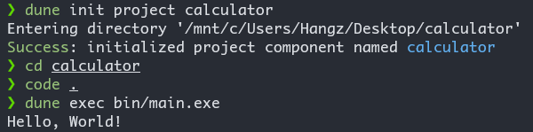
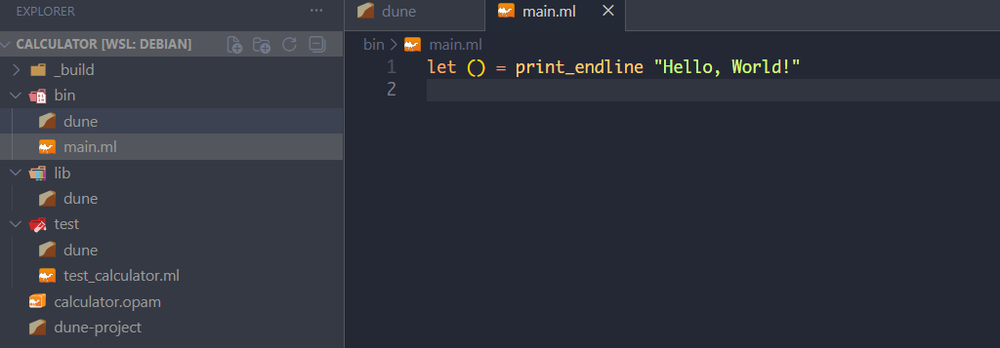
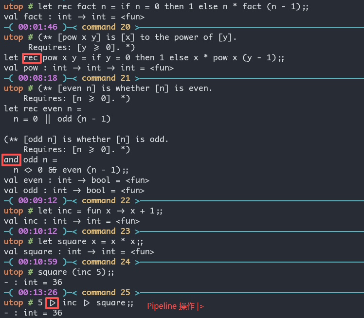
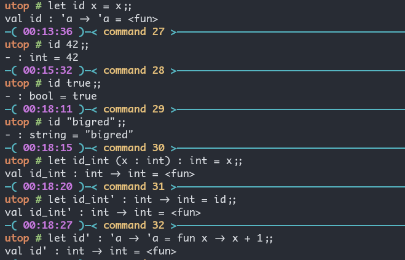
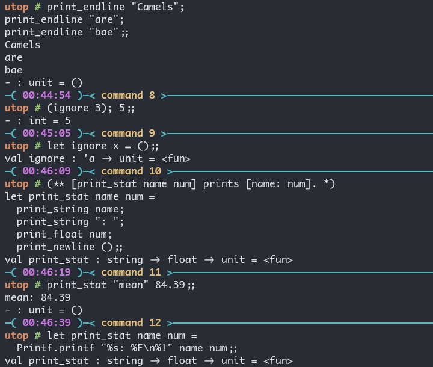
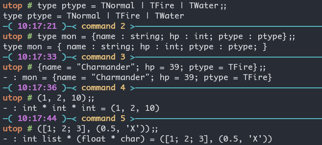

Ocaml 学习笔记
This book is the textbook for CS 3110 Data Structures and Functional Programming at Cornell University.
现在我的 WSL2 里的环境如下:
opam --version:2.4.1opam switch list:4.14.1(ocaml-base-compiler = 4.14.1),default(ocaml-base-compiler = 5.3.0)
使用下面的命令创建一个新的 Switch:
opam switch create cs3110-2025fa ocaml-base-compiler.5.3.0
eval $(opam env)
opam install -y utop odoc ounit2 qcheck bisect_ppx menhir ocaml-lsp-server ocamlformatYou should now be able to launch utop, the OCaml Universal Toplevel.
utopThe Basics of Ocaml
Toplevel
我现在安装了 utop.

The best workflow when using the toplevel with code stored in files is:
- Edit the code in the file.
- Load the code in the toplevel with
#use. - Interactively test the code.
- Exit the toplevel. Warning: do not skip this step.
#quit;;
Storing code in files
现在我们开始在文件里写一些代码: - There is no double semicolon ;; at the end of that line of code. The double semicolon is intended for interactive sessions in the toplevel, so that the toplevel knows you are done entering a piece of code. There’s usually no reason to write it in a .ml file.
(* hello.ml *)
let _ = print_endline "Hello world!"mkdir hello-world
cd hello-world
ocamlc -o hello.byte hello.ml
./hello.byte # Hello world!Dune
手工创建一个 Dune Project
- 创建一个名为
dune的文件, 里面写上:
(executable
(name hello))- 创建一个名为
dune-project的文件, 里面写上:(lang dune 3.4) dune build hello.exe来构建- 接下来在
_build/default/hello.exe处就可以找到构建后的可执行文件 - 或者使用
dune exec hello.exe来执行文件 dune clean来清理构建的文件
自动创建一个 Dune Project
dune init project calculator
cd calculator
code .
dune exec bin/main.exe
dune init 的运行示例在 VSCode 里显示如下:

可以和 typst watch main.typ 一样, 我们也有: dune build --watch.
Ocaml 里的表达式
注意:
- ocaml 里的
*只能用作整数乘法, 浮点数必须为*.(这后面有个小数点.) - 字符串的
^表示拼接

if 表达式, let ... in ... 表达式, assert 表达式, 函数表达式.

if表达式, let ... in ... 表达式, assert 表达式函数表达式:
- 普通函数:
let f x = ... - 递归函数:
let rec f x = ... - Mutually Recursive Function:
let rec f x1 ... xn = e1 and g y1 ... ym = e2 - 也可以把函数写成:
let f = fun x -> ...
OCaml 提供一个 |> 的中缀运算符, 实现管道 (Pipelines) 操作:
square (inc 5);;
5 |> inc |> square;;
Polymorphic Functions
identity function: let id x = x; val id : 'a -> 'a = <fun>.
'a是一个类型变量
我们可以通过: 提供参数的类型, 提供函数的类型, 提供参数之间的运算 (这样来确定参数类型), 把多态函数确定下来.

Labeled and Optional Arguments
let f ~name1:arg1 ~name2:arg2 = arg1 + arg2;;
let f ~name1:name1 ~name2:name2 = name1 + name2;;
let f ~name1 ~name2 = name1 + name2;;
(* 后面两种是等价的, 标签名和参数变量名一样, 这种情况可以只写标签名. *)
let f ~name1:(arg1 : int) ~name2:(arg2 : int) = arg1 + arg2
let f ?name:(arg1=8) arg2 = arg1 + arg2
(* ?name代表的是可选参数, 你可以直接使用 f 7, 也可以 f ~name:2 7 *)
Partial Application
let add x y = x + y
let addx x = fun y -> x + y
let add5 = addx 5
add5 2与此同时, ( + ) 也是一个函数, 我们甚至可以自己定义自己的中缀运算符: let ( op ) ... = ...

尾递归 (Tail Recursion)
let rec count n =
if n = 0 then 0 else 1 + count (n - 1)
let rec count_aux n acc =
if n = 0 then acc else count_aux (n - 1) (acc + 1)
let count_tr n = count_aux n 0A recursive call in tail position does not need a new stack frame. It can just reuse the existing stack frame.
A good compiler (and the OCaml compiler is good this way) can notice when a recursive call is in tail position, which is a technical way of saying “there’s no more computation to be done after it returns”.
换言之, 返回后就不会有更多的计算了.
count在计算完count (n - 1)之后还需要计算一次1 + ...;- 而
count_aux返回后不必进行计算了.
The Recipe for Tail Recursion. In a nutshell, here’s how we made a function be tail recursive: 1. Change the function into a helper function. Add an extra argument: the accumulator, often named acc. 2. Write a new “main” version of the function that calls the helper. It passes the original base case’s return value as the initial value of the accumulator. 3. Change the helper function to return the accumulator in the base case. 4. Change the helper function’s recursive case. It now needs to do the extra work on the accumulator argument, before the recursive call. This is the only step that requires much ingenuity.
(** [fact n] is [n] factorial. *)
let rec fact n =
if n = 0 then 1 else n * fact (n - 1)
let rec fact_aux n acc =
if n = 0 then acc else fact_aux (n - 1) (acc * n)
let fact_tr n = fact_aux n 1但是这实际上会遇见 integer overflow. \(\rightarrow\) opam install zarith (Ocaml 的大整数库)
#require "zarith.top";;
let rec zfact_aux n acc =
if Z.equal n Z.zero then acc else zfact_aux (Z.pred n) (Z.mul acc n);;
let zfact_tr n = zfact_aux n Z.one;;
zfact_tr (Z.of_int 50)
zarith库Documentation
(** [sum lst] is the sum of the elements of [lst]. *)
let rec sum lst = ...
(** Sum a list.
@param lst The list to be summed.
@return The sum of the list. *)
let rec sum lst = ...Printing
- 使用
print_endline来打印, 多个打印可以使用分号的语法糖. - 可以使用
print_string,print_float,print_newline等 - 可以使用
Printf.printf:%s代表 string,%F代表 float.

Debugging
- 使用 print
#trace很牛ocamldebug

#trace来debugExercises
Write an expression that computes 4.2 raised to the seventh power.
let rec ( ^^ ) x y = if y = 0 then 1. else x *. (( ^^ ) x (y - 1));;
(* val ( ^^ ) : float -> int -> float = <fun> *)
4.2 ^^ 7;;
(* - : float = 23053.9333248000075 *)注意: x1 = x2 (Structural Equality) 比较内容相等 (比如两个引用, 可以物理位置不同但是内容相同); x1 == x2(Physical Equality) 表示必须物理上的完全一样. - "hi" = "hi" 为 true, 而 "hi" == "hi" 为 false. ### OCaml operator cheatsheet #### Built-in infix operators
| Operator | Description |
|---|---|
= |
Structural equality |
<> |
Structural inequality |
< |
Less than |
> |
Greater than |
<= |
Less than or equal |
>= |
Greater than or equal |
== |
Physical equality (same object) |
!= |
Physical inequality (not same object) |
&& |
Boolean and |
|| |
Boolean or |
|> |
Reverse function application (x |> f is the same as f x) |
@@ |
Function application (f @@ x is the same as f x) |
** |
Float exponentiation |
^ |
String concatenation |
@ |
List concatenation |
! |
Get the value of a ref |
:= |
Set the value of a ref |
^^ |
Format string concatenation |
Datas and Types
Lists
[]: 'a list(注意到: list 是放在类型后面的.)e1 :: e2 :: e3 = e1 :: (e2 :: e3)[e1; e2; ...; en] = e1 :: e2 :: ... :: en :: []
列表常见的语法:
- Pattern Matching with Lists
let rec sum lst =
match lst with
| [] -> 0
| h :: t -> h + sum t
let rec length lst =
match lst with
| [] -> 0
| h :: t -> 1 + length t
let rec append lst1 lst2 =
match lst1 with
| [] -> lst2
| h :: t -> h :: append t lst2Variants
type day = Sun | Mon | Tue | Wed | Thu | Fri | Sat
let d = TueUnit Testing with OUnit2
dune init project calculatorlib文件夹下建立一个lib.ml, 写入比如一个let rec sum lst = ...test的dune文件里写入:
(test
(name test_calculator)
(libraries ounit2 calculator))test的test_calculator.ml文件里写入:
open OUnit2
open Calculator.Lib
let tests = "test suite for sum" >::: [
"empty" >:: (fun _ -> assert_equal 0 (sum []));
"singleton" >:: (fun _ -> assert_equal 1 (sum [1]));
"two_elements" >:: (fun _ -> assert_equal 3 (sum [1; 2]));
]
let _ = run_test_tt_main testsdune exec test/test_calculator.exe

这里的 >:: 和 >::: 都是 Ounit2 自定义的运算符.
Records and Tuples
type ptype = TNormal | TFire | TWater
type mon = {name : string; hp : int; ptype : ptype}
{name = "Charmander"; hp = 39; ptype = TFire}
Type Synonyms
type point = float * float
type vector = float list
type matrix = float list listOptions
t optionis a type for every typet.
let rec list_max lst =
match lst with
| [] -> None
| h :: t -> match list_max t with
| None -> Some h
| Some m -> Some (max h m);;
(* val list_max : 'a list -> 'a option = <fun> *)
list_max [1; 2; 3; 4; 10; 0];;
(* - : int option = Some 10 *)
Algebraic Data Types
type point = float * float
type shape =
| Point of point
| Circle of point * float (* center and radius *)
| Rect of point * point (* lower-left and upper-right corners *)
let area sh =
match sh with
| Point _ -> 0.0
| Circle (_, r) -> Float.pi *. (r ** 2.0)
| Rect ((x1, y1), (x2, y2)) ->
let w = x2 -. x1 in
let h = y2 -. y1 in
w *. h
let center sh =
match sh with
| Point p -> p
| Circle (p, _) -> p
| Rect ((x1, y1), (x2, y2)) -> ((x2 +. x1) /. 2.0, (y2 +. y1) /. 2.0)还可以实现 Recursive Variants:
type intlist = Nil | Cons of int * intlist
type 'a mylist = Nil | Cons of 'a * 'a mylist
let lst3 = Cons (3, Nil) (* similar to [3] *)
let lst_hi = Cons ("hi", Nil) (* similar to ["hi"] *)Exceptions
exception E of t
Higher-Order Functions
let rec map f = function
| [] -> []
| h :: t -> f h :: map f t
let p x = print_int x; print_newline(); x + 1
let rec map f = function
| [] -> []
| h :: t -> let h' = f h in h' :: map f t
let lst2 = map p [1; 2]比较两种实现:
- 第一种实现 evaluates to:
p 1 :: (p 2 :: []), 那么p 2会先被调用, 然后是p 1. 打印的顺序是2然后是1. - 第二种实现 evaluates to:
let h' = p 1 in h' :: (let h' = p 2 in h' :: []), 那么p 1会先被调用, 然后是p 2. 打印的顺序是1然后是2.
let rec map_tr_aux f acc = function
| [] -> acc
| h :: t -> map_tr_aux f (f h :: acc) t
let map_tr f = map_tr_aux f []
let lst = map_tr (fun x -> x + 1) [1; 2; 3]Filter and Tail Recursion:
let rec filter_aux p acc = function
| [] -> acc
| h :: t -> if p h then filter_aux p (h :: acc) t else filter_aux p acc t
let filter p = filter_aux p []
let lst = filter even [1; 2; 3; 4]Fold left and Fold right:
val fold_left : ('acc -> 'a -> 'acc) -> 'acc -> 'a list -> 'acc
fold_left f init [b1; ...; bn] is f (... (f (f init b1) b2) ...) bn
val fold_right : ('a -> 'acc -> 'acc) -> 'a list -> 'acc -> 'acc
fold_right f [a1; ...; an] init is f a1 (f a2 (... (f an init) ...))Modular Programming
A structure is simply a collection of definitions, such as:
struct
let inc x = x + 1
type primary_color = Red | Green | Blue
exception Oops
endmodule MyModule = struct
let inc x = x + 1
type primary_color = Red | Green | Blue
exception Oops
end会产生下面的结果:
module MyModule :
sig
val inc : int -> int
type primary_color = Red | Green | Blue
exception Oops
end关于一个 module 的类型, 我们称之为一个 module type (或者 signature):
module type LIST_STACK = sig
exception Empty
val empty : 'a list
val is_empty : 'a list -> bool
val push : 'a -> 'a list -> 'a list
val peek : 'a list -> 'a
val pop : 'a list -> 'a list
endmodule type MATH = sig
(** [fact n] is [n!]. *)
val fact : int -> int
end
module Math : MATH = struct
(** [fact_aux n acc] is [n! * acc]. *)
let rec fact_aux n acc =
if n = 0 then acc else fact_aux (n - 1) (n * acc)
let fact n = fact_aux n 1
end
(* Math.fact_aux 就无法访问, 从而 module type 提供了一个隐藏实现细节的功能 *)Fucntors, 把 module 作为参数传递给另一个 module:
module type STACK = sig
exception Empty
type 'a stack
val empty : 'a stack
val is_empty : 'a stack -> bool
val push : 'a -> 'a stack -> 'a stack
val peek : 'a stack -> 'a
val pop : 'a stack -> 'a stack
end
module ListStack : STACK = struct
exception Empty
type 'a stack = 'a list
let empty = []
let is_empty s = (s = [])
let push x s = x :: s
let peek s =
match s with
| [] -> raise Empty
| h :: _ -> h
let pop s =
match s with
| [] -> raise Empty
| _ :: t -> t
end
module VariantStack = struct
type 'a t = E | S of 'a * 'a t
let empty = E
let push x s = S (x, s)
let peek = function E -> raise Empty | S (x, _) -> x
let pop = function E -> raise Empty | S (_, s) -> s
end
(* Functor 的用处: 为不同的实现写同样的代码 *)
module StackTester (S : Stack) = struct
let tests = [
"peek (push x empty) = x" >:: fun _ ->
assert_equal 1 S.(empty |> push 1 |> peek)
]
end
module ListStackTester = StackTester (ListStack)
module VariantStackTester = StackTester (VariantStack)
let all_tests = List.flatten [
ListStackTester.tests;
VariantStackTester.tests
]